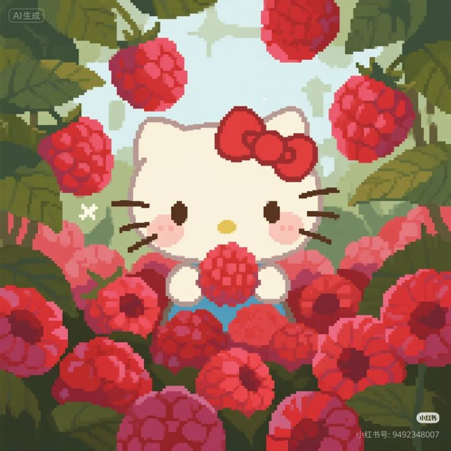
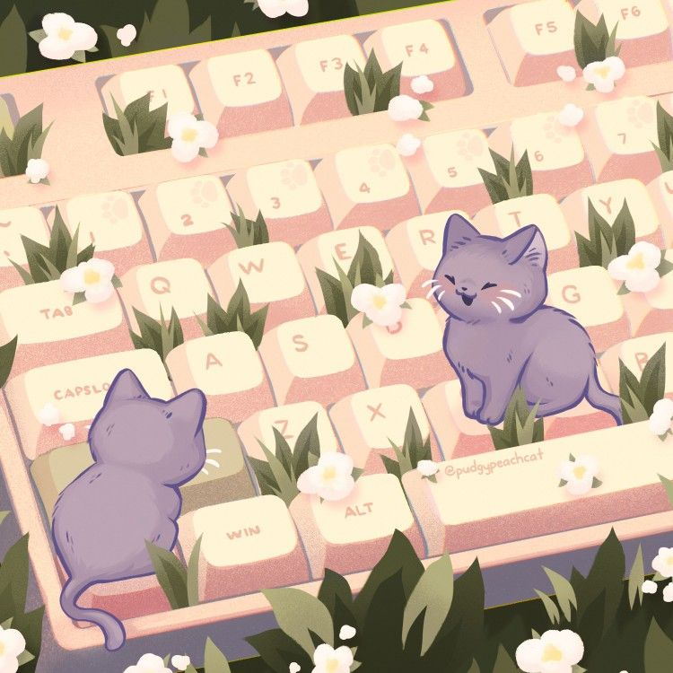
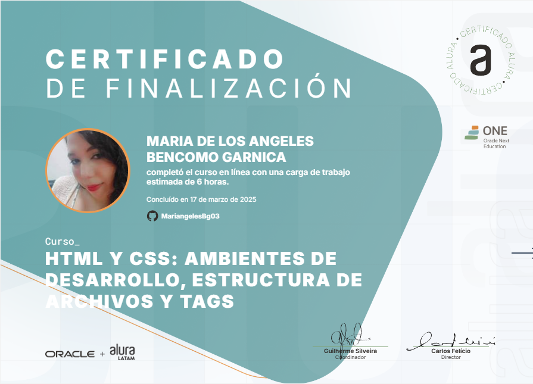
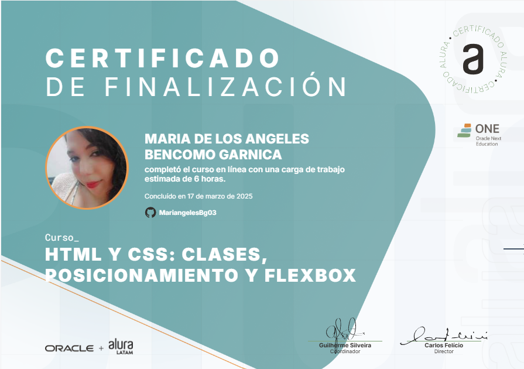
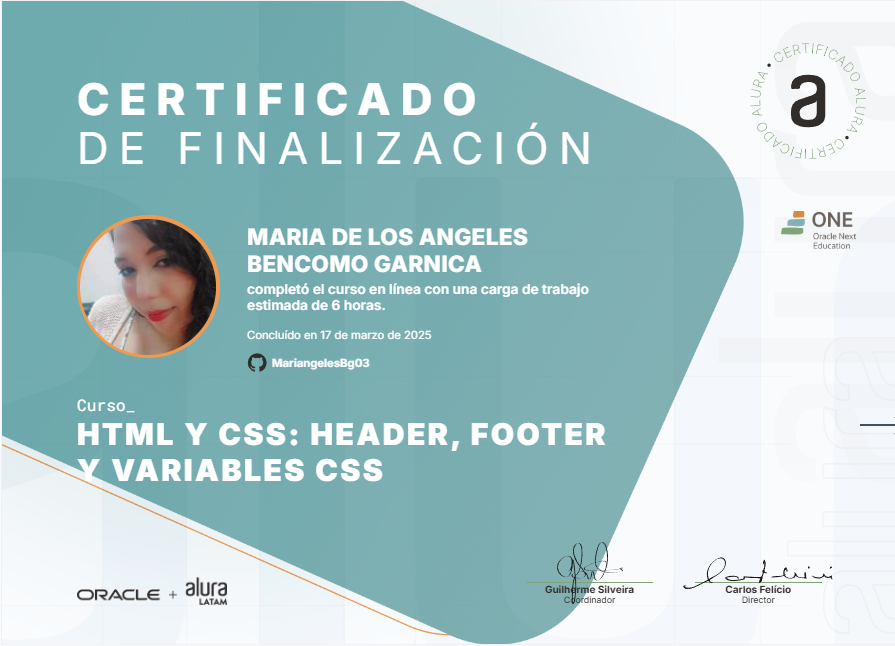
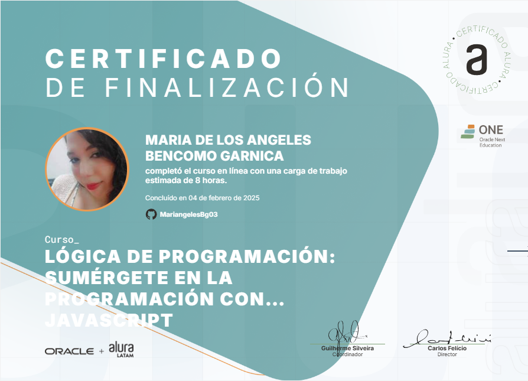
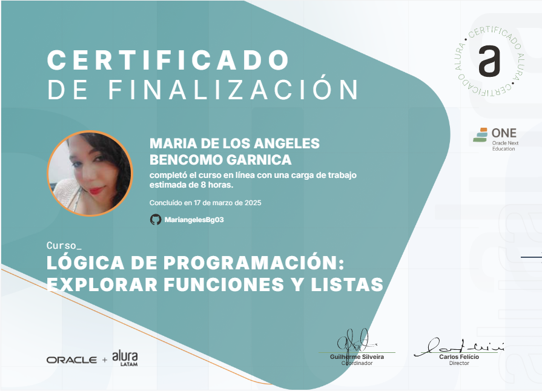
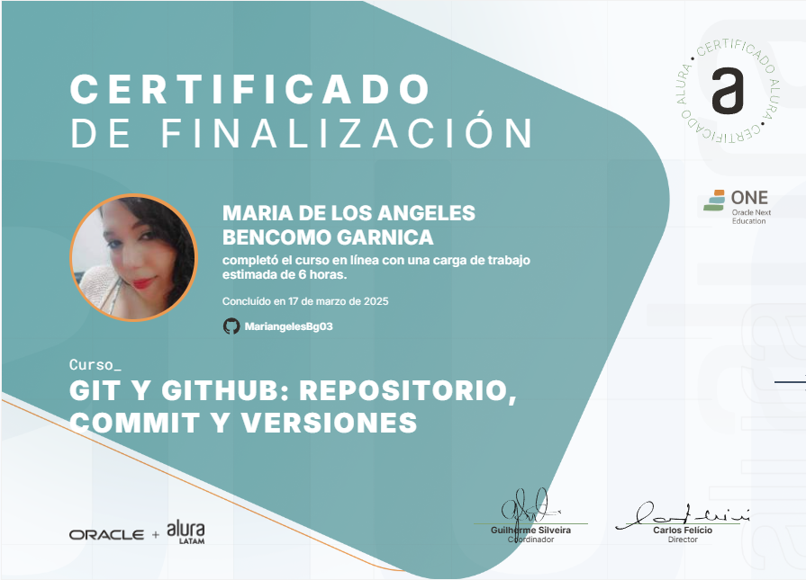
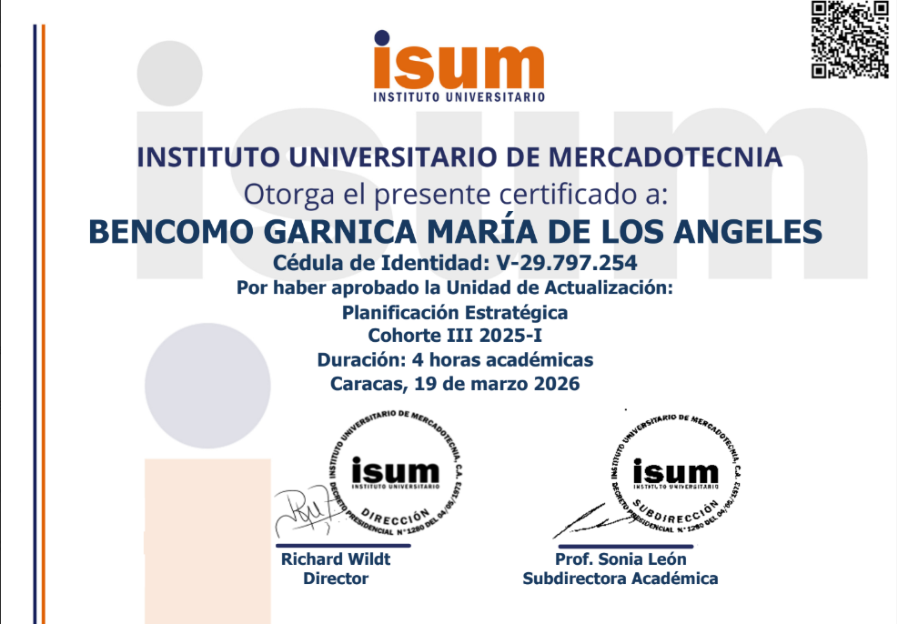

María de los Ángeles
Futura Ingeniera de Sistemas y Técnico Superior en Administración con enfoque híbrido en desarrollo de software y gestión técnica. Apasionada por la arquitectura web semántica, administración avanzada de redes IPv4/IPv6 y la investigación académica. Experta en transformar procesos complejos en soluciones lógicas, escalables y eficientes, con habilidades en redacción técnica de alto impacto.
Sobre mi...
Futura Ingeniera de Sistemas con un enfoque de alto rigor en la arquitectura de información. Mi valor diferencial reside en la capacidad de transformar procesos abstractos en documentación técnica de alta precisión (reportes de 20+ páginas con análisis FODA y metodológico) y lógica estructurada en Python. Soy una redactora académica técnica que une la disciplina administrativa con la armonía musical, garantizando que cada solución sea tan estética como eficiente.


Ingeniería de Software
Desarrollo basado en POO y manipulación dinámica del DOM. Experta en el manejo de estructuras de datos complejas (diccionarios, bibliotecas) y lógica algorítmica aplicada para la automatización de procesos técnicos escalables.
Gestión Estratégica
Especialista en optimización de flujos directivos y auditoría administrativa. Capacidad avanzada para la toma de decisiones bajo presión, gestión de recursos críticos y reingeniería de procesos para maximizar la eficiencia operativa organizacional.
Voz & Partituras
La disciplina del canto aplicada a la armonía y ritmo del Clean Code.
Certificaciones y Logros







Más allá de la Ingeniería
Mi trayectoria no se limita a los sistemas; poseo una sólida base en atención al cliente de alto nivel y docencia. Esta faceta ha forjado mi lado más comunicativo y empático, permitiéndome traducir necesidades humanas complejas en requerimientos técnicos claros y soluciones que realmente conectan con el usuario.
Vibración & Arcanos
La armonía que encuentro en el canto y las partituras fluye en paralelo con la simbología del tarot. Para mí, la música y los arcanos son herramientas de intuición y enfoque que agudizan mi capacidad de análisis, permitiéndome abordar la arquitectura de software con una sensibilidad única y una lógica equilibrada.